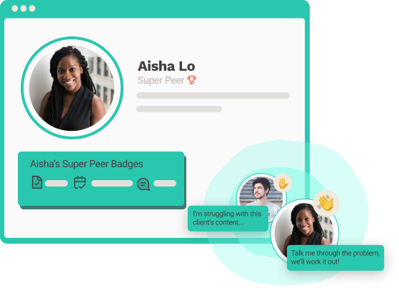

Our mission is to help you advance your freelance career. We are a cooperative – all freelancers have a say on how we operate.
We put people first. At Freelance Grow, we value your work and believe that excellent peer support leads to outstanding results. Owned and run by freelancers, we attract and develop talent with training, benefits, and transparency. Together, we’re constructing the future of freelance work.
Rather than competing with other freelancers for jobs, our platform seeks to establish peer support connections to help each other grow. We match clients with talent that meets their project needs so that freelancers don't spend endless hours writing proposals and bidding for projects. Finally, our members can access unique benefits, such as paid time off and reimbursements for their work equipment. Scroll down to learn how to get started!
| 01/05 |
New freelancers join a paid apprenticeship period, consisting of completing three paid projects. This programme helps us assess your expertise. Also, it enables you to get familiar with how we operate and help you decide if we're the right fit for you.Upon completing the apprenticeship programme, you’ll become a member and be assigned to a level (see "How we work" below for more details about our levels).
Suppose you have developed a reputation with another freelancing platform. In that case, you may be eligible to skip the apprenticeship programme and become a member right away. You'll have the option to share your other profiles during the sign-up process.
Peer support is what makes our platform stand out from the competition. Once you become a member, we match you with a Super Peer – a freelancer in your field with experience on our platform. Super Peers can support you in accessing resources, giving you feedback on your portfolio, talking through problems, and many other things! We encourage you to set up regular catch-ups with your Super Peer.
As you gain experience on our platform, you'll have the option to become a Super Peer for new members joining us. Being a Super Peer benefits you in adding to your professional competencies, accessing training sessions, and getting unique badges to display on your profile. Further, Super Peers pay lower fees in every transaction as active contributors to the community!
| 01/05 |
We regulate the market so that freelancers don't compete against each other for jobs but rather support each other to grow by giving constructive feedback and mentoring.
Our level system helps the platform adjust the supply and demand of talent, preventing market saturation. New freelancers may have to wait until spots are available, but once in, chances of landing jobs are much higher than the competition.
We consider three elements for our members to progress through the different levels:
This approach is designed for our members to get quality feedback and advance their careers.
Freelancers new to the platform go through a paid apprenticeship period paid at an Entry Level rate.
Apprenticeships may be omitted for freelancers with a proven record on a competing platform.
The entry level is ideal for people starting as freelancers or embarking on a new career trajectory. Entry level freelancers develop skills like learning how to price projects, communicating effectively with clients, and growing field-specific abilities.
*Clients hiring entry-level freelancers will have budgets between $20-$300.
This level is for freelancers with proven experience in their field looking to advance their freelance careers. Freelancers at this level have excellent communication and collaboration skills. They can work through problems and deliver under pressure. This level is ideal for repeated, reliable work.
*Clients hiring mid-level freelancers will have budgets between $300-$1,000.
Top freelancers in their field belong to the expert level. These freelancers have sharp consulting skills and exceptional talent to advance clients' businesses. These talented professionals are perfect for designing and delivering entire projects that require complex analysis to drive impact. They typically engage with mid to long term projects.
*Clients hiring expert-level freelancers usually have budgets between USD $1,000-$10,000+.
*Estimated budgets vary depending on field and project type.